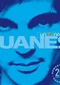
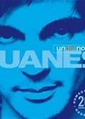
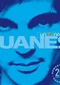

Juan Esteban Aristizábal Vásquez conocido por su nombre artístico Juanes, es un cantante, compositor, músico y diseñador industrial colombiano. Se desempeña principalmente en los géneros musicales de pop latino y rock en español, combinando diversos ritmos musicales, una de sus canciones mas conocidas mundialmente son a "dios le pido" y "la camisa negra".

Mi cancion favorita :D
Juanes "La camisa Negra"